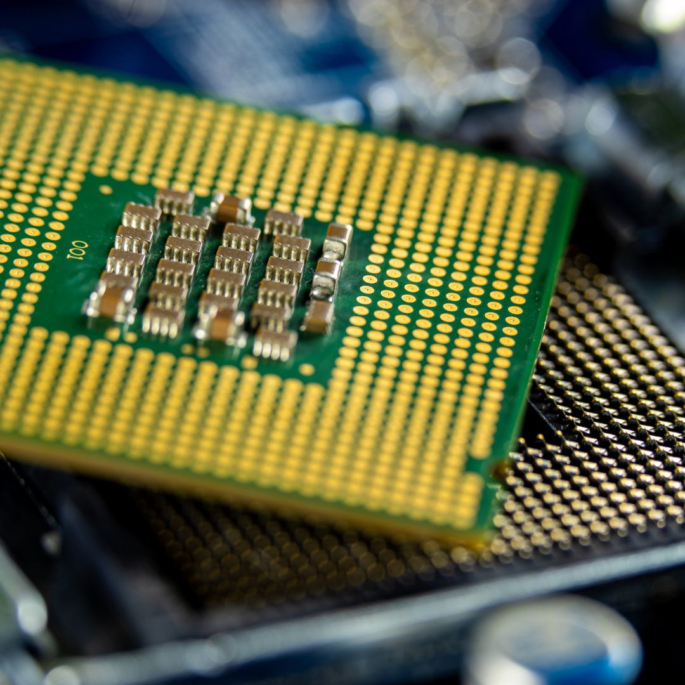
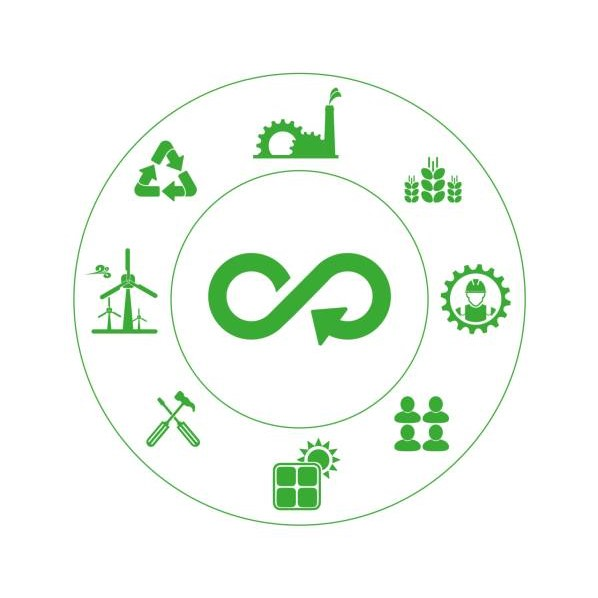
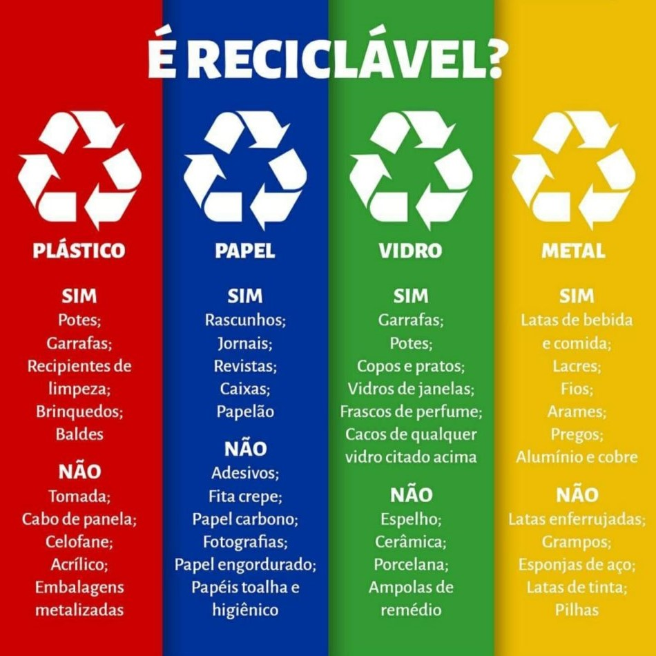
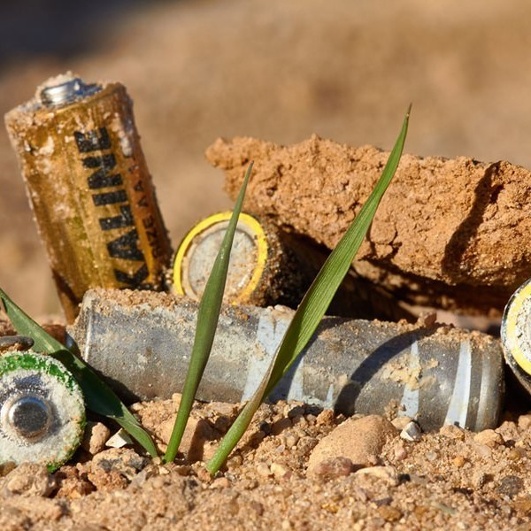

Reduzir o Impacto Ambiental com a Reciclagem
A reciclagem do lixo eletrônico é uma das formas mais eficazes de mitigar os impactos ambientais do descarte inadequado de dispositivos. Além de evitar a contaminação do solo e da água, a reciclagem permite a recuperação de metais e componentes valiosos. Empresas especializadas desmontam equipamentos eletrônicos e reaproveitam materiais como plásticos, vidros e metais preciosos.
A Chave para a Reciclagem Eficiente de Lixo Tecnológico Para que a reciclagem do lixo eletrônico seja eficiente, é necessário um sistema de logística reversa, que permite que equipamentos descartados sejam coletados e encaminhados para empresas especializadas. Fabricantes e varejistas podem incentivar os consumidores a devolver dispositivos antigos por meio de programas de trocas e reciclagem. |
 |
|  | Metais Preciosos na Reciclagem Eletrônica Celulares, computadores e eletrodomésticos contêm metais preciosos como ouro, prata e cobre, que podem ser recuperados por meio da reciclagem. Esses metais são essenciais para a fabricação de novos dispositivos e reduzem a necessidade de mineração, minimizando danos ambientais. |
Economia Circular e a Redução do Lixo Eletrônico A economia circular busca reaproveitar materiais ao máximo, promovendo um modelo mais sustentável e reduzindo a geração de lixo eletrônico. Em vez de descartar produtos obsoletos, consumidores e empresas podem optar por recondicionamento e reutilização. |
 |
|  | Plásticos, Vidros e Outros Materiais na Reciclagem de Eletrônicos Além dos metais preciosos, os dispositivos eletrônicos contêm plásticos, vidros e outros materiais que podem ser reciclados. O reaproveitamento correto desses materiais evita que grandes quantidades de lixo eletrônico acabem em aterros sanitários. Porém, um dos maiores desafios da reciclagem ainda é o descarte correto das baterias eletrônicas. |
Reciclagem de Baterias: Evitando Riscos e Poluição As baterias são um dos elementos mais críticos no lixo eletrônico, pois contêm metais tóxicos como lítio e cobalto. O descarte inadequado pode causar contaminação química e riscos de explosões. A reciclagem de baterias é essencial para evitar a extração excessiva de recursos naturais e garantir um descarte seguro. |
 |